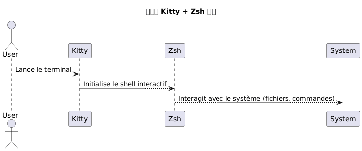
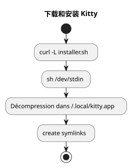
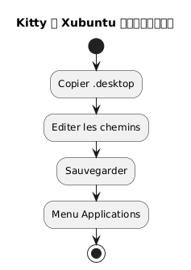
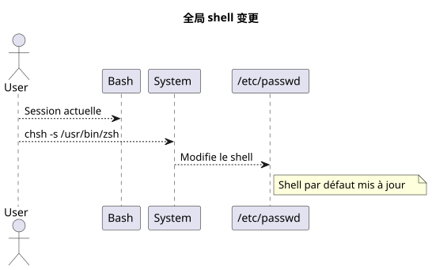
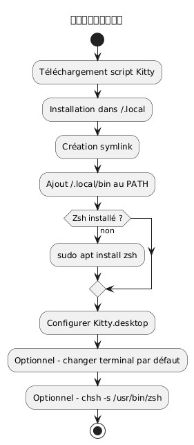
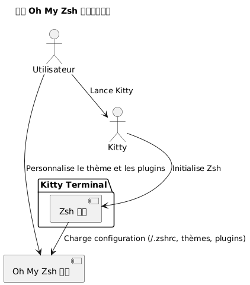
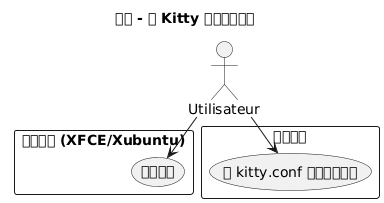
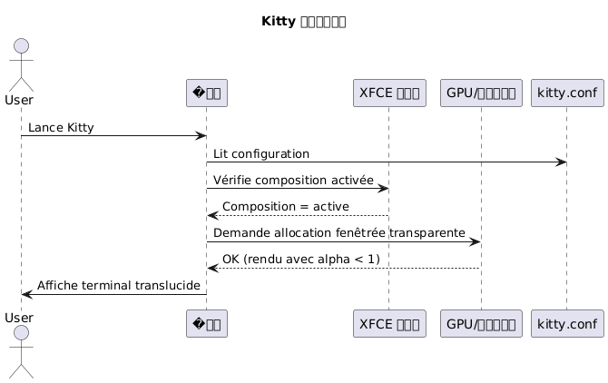

在 Xubuntu 中安装 Kitty 终端并将 Zsh 设为默认 shell
Publié le 07 May 2026 Mis à jour le 2026-05-07
本指南逐步解释如何在 Xubuntu 上安装终端 kitty，正确配置它，并将 bash 替换为 zsh 作为默认 shell。 kitty项目地址:https://github.com/kovidgoyal/kitty.
_ Kitty 是一个现代、快速且可配置的终端，特别适合对要求高的开发者。 _
为什么选择 Kitty 和 Zsh？
Kitty 的特点是：
-
得益于 GPU 加速的卓越性能,
-
完全基于单个文本文件的配置，
-
出色的字体和连字支持。
Zsh 另一方面是一个功能强大的交互式 shell，提供：
-
智能补全，
-
一个可自定义的提示，
-
与 bash 具有良好的兼容性。
通过将 Kitty 与 Zsh 结合使用，您可以获得一个高效且美观的环境。

|
此指南仅限于通过脚本安装及 Xubuntu。 |
系统先决条件
开始之前，请确保您有：
-
Xubuntu 已安装，
-
互联网接入，
-
一个功能正常的 Bash shell，用于运行脚本。
�检查您的环境：
uname -a
lsb_release -aKitty 的下载和安装
Kitty 建议通过官方脚本进行安装，该脚本将文件放置在`~/.local/kitty.app`。
|
这种方法与包管理器无关（没有`apt`). |
下载安装脚本
执行以下命令：
curl -L https://sw.kovidgoyal.net/kitty/installer.sh | sh /dev/stdin此命令执行 :
-
下载二进制文件，
-
提取 在`~/.local/kitty.app`,
-
创建符号链接。

创建符号链接
为了能够调用`kitty`从终端创建一个符号链接 :
ln -s ~/.local/kitty.app/bin/kitty ~/.local/bin/kitty添加`~/.local/bin`将其添加到您的 PATH 中（如果尚未添加的话） :
echo 'export PATH="$HOME/.local/bin:$PATH"' >> ~/.zshrc
source ~/.zshrc您可以检查安装：
kitty --version在 Xubuntu 中集成 Kitty
为了让 Kitty 在应用程序菜单中出现：
复制文件 desktop
复制文件`.desktop`提供：
cp ~/.local/kitty.app/share/applications/kitty.desktop ~/.local/share/applications/修改桌面文件
编辑文件 :
nano ~/.local/share/applications/kitty.desktop�检查或修改以下行：
[Desktop Entry]
Version=1.0
Type=Application
Name=Kitty Terminal
Comment=Fast GPU-based terminal emulator
Exec=/home/$USER/.local/kitty.app/bin/kitty
Icon=kitty
Categories=System;TerminalEmulator;替换`YOURUSER`由您的用户名。

将 Kitty 设置为默认终端 (可选)
要把 Kitty 设为默认启动的终端：
sudo update-alternatives --install /usr/bin/x-terminal-emulator x-terminal-emulator ~/.local/kitty.app/bin/kitty 50
sudo update-alternatives --config x-terminal-emulator选择`kitty`在所提供的菜单中。
Zsh 的安装
如果 Zsh 尚未安装，请执行：
sudo apt install zsh检查安装 :
zsh --version将 Zsh 设置为默认 shell
您可以全局更改您的 shell，或者仅在 Kitty 中更改。
全局方法（适用于所有终端）
识别绝对路径：
which zsh通常`/usr/bin/zsh`.
修改默认的 shell :
chsh -s /usr/bin/zsh登出然后重新登录。

Kitty专用方法
如果您只想在 Kitty 中更改 shell，请编辑配置文件：
nano ~/.config/kitty/kitty.conf�添加这一行：
shell zsh保存并重启 Kitty。
Zsh 配置 (可选)
自定义您的 Zsh :
创建一个 .zshrc 文件
touch ~/.zshrc
nano ~/.zshrc最小配置示例
export ZSH_THEME="robbyrussell"
export PATH="$HOME/.local/bin:$PATH"
alias ll="ls -la"完整工作流程摘要
下面的示意图概括了整个过程：

最终检查
启动 Kitty :
kitty您应该看到`zsh`已激活 :
echo $SHELL预期结果：
/usr/bin/zsh
要修改字体大小在小猫, 必须调整参数`font_size`在配置文件中。以下是详细的步骤：
�📂 打开配置文件
主配置文件通常位于：
~/.config/kitty/kitty.conf如果此文件尚不存在，您可以创建它。 Exemple :
nano ~/.config/kitty/kitty.conf�🖋️ 添加或修改 `font_size
�添加以下指令，如果它已存在则进行修改：
font_size 14.0这里`14.0`对应所需的尺寸。您可以输入任何小数值，例如`12.0`, `15.5`等等
💾 保存并重启 Kitty
-
保存 (
Ctrl + O, 然后`Entrée`) 和离开 (Ctrl + X) 如果您使用`nano`. -
关闭所有 Kitty 窗口，然后重新启动终端以使更改生效。
�✅ 动态调整(临时缩放)
如果您想临时放大/缩小而不更改设置，请使用默认的键盘快捷键 :
-
增加字体大小:
Ctrl + Shift + =
-
减小字体大小:
Ctrl + Shift + -
-
重置大小:
Ctrl + Shift + Backspace
这些设置在终端关闭后不会持续。
安装和配置 Oh My Zsh
一旦安装并配置了Zsh作为默认shell，您可以使用*Oh My Zsh*丰富您的环境，这是一个管理Zsh配置的框架，提供：
-
一组用于提示的主题,
-
许多插件
-
清晰的配置组织
安装 Oh My Zsh
请确保 Zsh 处于活动状态：
zsh --version如有必要，请执行：
zsh然后下载并运行官方安装脚本：
sh -c "$(curl -fsSL https://raw.githubusercontent.com/ohmyzsh/ohmyzsh/master/tools/install.sh)"这个脚本：
-
创建文件夹`~/.oh-my-zsh`,
-
可能保存您的文件`~/.zshrc`,
-
自动激活新的提示。
更改主题
打开您的配置文件：
nano ~/.zshrc修改变量`ZSH_THEME`选择另一个主题（例如`agnoster`) :
ZSH_THEME="agnoster
保存然后重新加载配置 :
source ~/.zshrc验证
启动 Kitty 并检查提示是否已经更改。 您可以通过执行来确认 Oh My Zsh 已激活 :
echo $ZSH结果应该类似于：
/home/votre_utilisateur/.oh-my-zsh
用例图

在 Kitty 中开启透明度
Kitty 最受欢迎的功能之一是能够为终端背景添加 透明度。这样可以看到底层环境（窗口、桌面等）的若影，这在多任务处理时特别有用。
透明性的前提条件
Kitty 中的透明度基于�窗口合成器由图形环境使用。 在Xubuntu（基于XFCE），请确保该合成已启用.
-
在桌面上右键点击 > 设置 >�窗口管理器设置,
-
标签作曲家: 复选框 [启用合成] 必须勾选。

kitty.conf中的透明度设置
打开您的配置文件`~/.config/kitty/kitty.conf`:
nano ~/.config/kitty/kitty.conf�添加或修改以下行：
background_opacity 0.85此参数接受的值范围为：
-
1.0→ 不透明 (没有透明度) -
0.0→ 完全透明 (不可用) -
中间值例如`0.90`,
0.75，等等
一个好的视觉妥协通常在`0.85` et 0.95.
重新启动 Kitty
关闭所有 Kitty 实例，然后重新打开一个新窗口以使更改生效：
kitty可能的补充
如果您使用自定义终端背景，您也可以设置具有透明度的背景颜色（以 RGBA 表示）：
background #1e1e2eff最后一个组件 (ff) 表示不透明度 （的`00` à ff).
序列图 - Kitty 初始化（带透明度）

已知限制
|
如果以下条件成立，半透明功能不工作： - XFCE 合成器已被禁用， - 正在使用不兼容的窗口管理器, - 您在后台以 tmux 模式使用 Kitty，且不支持透明度。 |
关闭声音提示 (audible bell)
默认情况下，Kitty 在输入错误命令或终端事件触发时会发出哔声。此噪音可能很快变得烦人，尤其是在高强度开发环境中。
要禁用此行为，请在文件中添加以下指令`~/.config/kitty/kitty.conf`:
audible_bell no|
您也可以启用 retour visuel 来代替声音提示音： |
Kitty更新
由于 Kitty 是通过脚本而非包管理器安装的，更新方法是重新运行官方安装脚本。这可以下载最新版本并将您现有的安装更新到`~/.local/kitty.app`.
|
后缀`.app`在路上`~/.local/kitty.app`是Kitty在Linux上通过其官方脚本安装的惯例，并且绝不表示仅与macOS兼容。 |
|
在运行更新命令之前，请确保您位于您的个人目录 ( |
从您的主目录执行以下命令：
curl -L https://sw.kovidgoyal.net/kitty/installer.sh | sh /dev/stdin此脚本将负责：
-
下载新版本的二进制文件。
-
提取文件到`~/.local/kitty.app`.
-
如有必要，更新符号链接。
更新后，建议关闭所有 Kitty 实例并重新启动，以确保新版本被正确加载。
参考文献
如果您想深入了解自定义，请查阅官方文档：
-
Kitty：https://sw.kovidgoyal.net/kitty/
-
https://sw.kovidgoyal.net/kitty/conf/#opt-kitty.background_opacity
-
https://sw.kovidgoyal.net/kitty/conf/#opt-kitty.audible_bell
-
Zsh：https://zsh.sourceforge.io/
结论
您现在拥有：
-
一个现代且高性能的终端(Kitty)
-
一个功能强大且可定制的Shell（Zsh）
-
一个干净且独立于系统包的配置
-
拥有 Oh My Zsh、美观且实用的终端